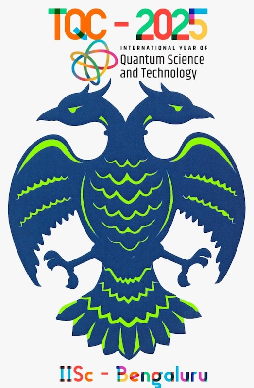
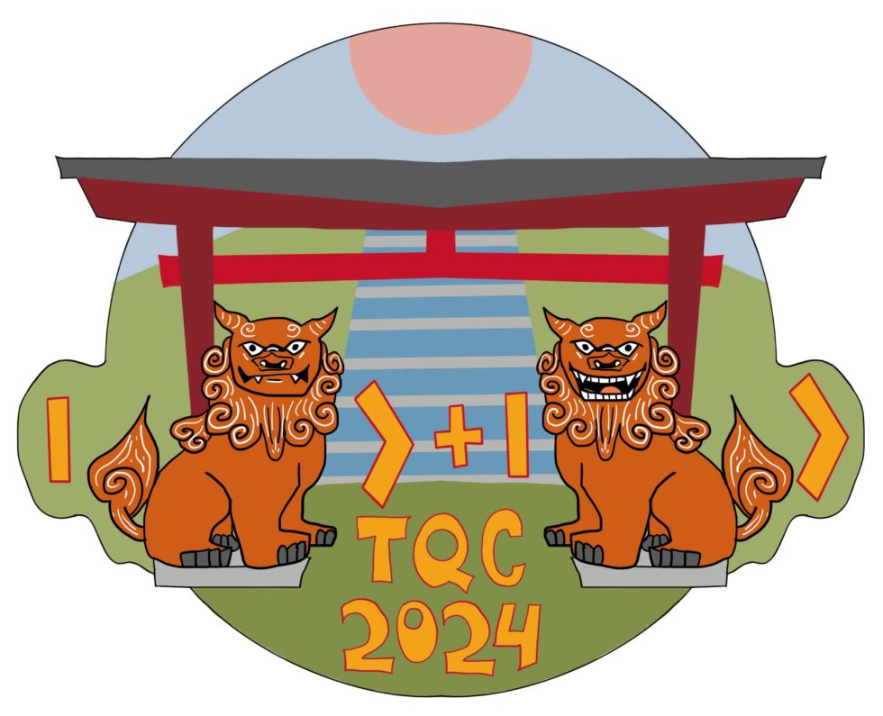
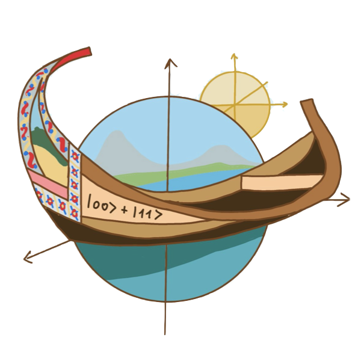

TQC History
Previous Editions
| Year & Websites | Place | Local organizer chair(s) | PC chairs & proceedings |
|---|---|---|---|
| 2006 | Kanagawa, JP | ? | ? |
| 2007 | Nara, JP | ? | ? |
| 2008 | Tokyo, JP | ? | Yasuhito Kawano, Michele Mosca |
| 2009 | Waterloo, CAN | ? | Andrew Childs, Michele Mosca |
| 2010 | Leeds, UK | Vivien M. Kendon | Wim Dam, Vivien M. Kendon, Simone Severini |
| 2011 | Madrid, ESP | Miguel Martin-Delgado, Alberto Ibort | Dave Bacon, Miguel Martin-Delgado, Martin Roetteler |
| 2012 | Tokyo, JP | Yasuhito Kawano, Mio Murao | Kazuo Iwama, Yasuhito Kawano, Mio Murao |
| 2013 | Guelph, CAN | David Kribs, Bei Zeng | Simone Severini, Fernando Brandao |
| 2014 | Singapore | Troy Lee | Steven T. Flammia, Aram W. Harrow |
| 2015 | Brussels, BEL | Stefano Pironio, Jérémie Roland | Salman Beigi, Robert König |
| 2016 | Berlin, GER | Jens Eisert, Oliver Buerschaper | Anne Broadbent |
| 2017 | Paris, FR | Damian Markham, Eleni Diamanti, Elham Kashefi | Mark M. Wilde |
| 2018 | Sydney, AUS | ? | Stacey Jeffery |
| 2019 | Maryland, US | Aarthi Sundaram, Gorjan Alagic, Alexey Gorshkov | Wim van Dam, Laura Mančinska |
| 2020 | online, Riga, LT | Andris Ambainis | Steven Flammia |
| 2021 | online, Riga, LT | Andris Ambainis | Min-Hsiu Hsieh |
| 2022 | Illinois, US | Eric Chitambar | François Le Gall, Tomoyuki Morimae |
| 2023 | Aveiro, POR | Paulo Almeida, Lídia del Rio | Omar Fawzi, Michael Walter |
| 2024 | Okinawa, JP | David Elkouss Coronas, Lídia del Rio | Frédéric Magniez, Alex Bredariol Grilo |
| 2025 | Bengaluru, IN | C. M. Chandrashekar, Anirban Pathak, Lídia del Rio | Bill Fefferman |
Websites & Logos
2025

2024

2023
